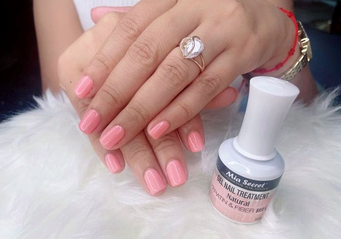
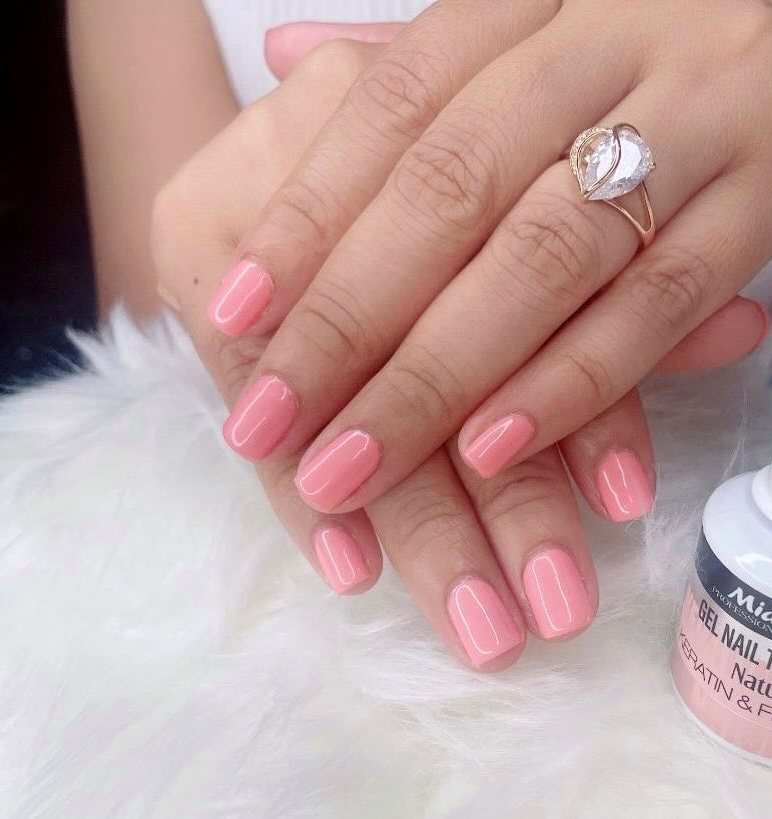
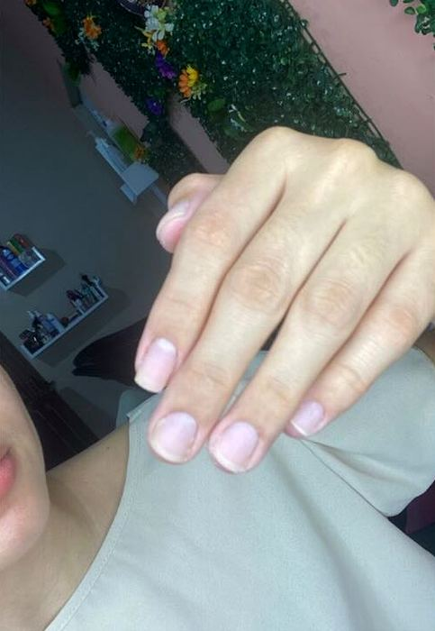
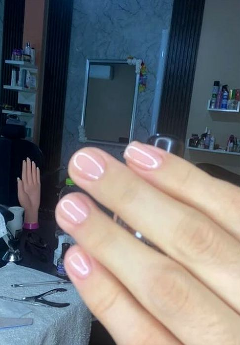

Esmaltado permanente
Color parejo que aguanta semanas.
Acrílicas L.250 · Semipermanente L.150.
Acrílicas con el largo y la forma que querés, pintado semipermanente que aguanta semanas sin descascararse, y keratina para fortalecer tu uña natural. Todo en la misma visita si querés.

Trabajo real, tal como lo publica Laila.

Color parejo que aguanta semanas.

La uña natural, sin tratamiento.

Más fuerte y con esmaltado permanente.
Un juego completo de uñas acrílicas cuesta L.250 en Laila's Beauty Salon y toma unas 2 horas. Los diseños se cotizan aparte según lo que querás.
L.150, y toma alrededor de una hora. Aguanta semanas sin descascararse; cuánto exactamente depende de tu uña y de tu día a día.
Es un tratamiento que fortalece tu propia uña, sin ponerte extensión, terminado con esmaltado permanente. Se cotiza por WhatsApp.
En El Pino, a orilla de la carretera CA-13 rumbo a Tela, frente a Clínica La Esperanza. Son unos 20 minutos desde La Ceiba y hay parqueo al frente.
Escribime y te paso el horario que tengo libre. Se abre WhatsApp con el mensaje ya escrito.